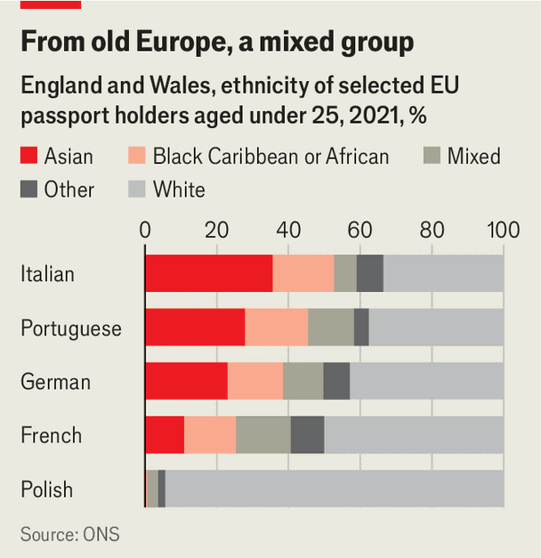

In Britain, “European” doesn’t mean white
The country’s EU citizens are astonishingly diverse
Oct 15th 2026
To the uninformed palate, pindakaas is simply peanut butter. But some Somalis in Leicester, a city in the English Midlands, prefer the Dutch product. Jars of imported pindakaas can be bought in corner shops around the run-down St Matthew’s housing estate, near the city centre. So can Dutch oatmeal, Dutch vanilla sugar and condiments such as kruiden ketchup and romige fritessaus.
The Somalis of St Matthew’s developed a taste for such foods in the Netherlands, where many were refugees. They gained Dutch citizenship then migrated to Britain under eu freedom-of-movement rules. They are part of a large, diverse population of ethnic-minority Europeans in the country. Often overlooked, this population challenges British assumptions about immigration and Europe.

The Migration Observatory, a think-tank at Oxford University, estimates that some 800,000 ethnic-minority people in Britain hold eu passports. Most come from “old” European countries, such as France, Italy and the Netherlands, rather than the “new” countries that joined the union after 2003, such as Lithuania and Poland. Young Western Europeans in Britain are startlingly diverse (see chart).
Numbering almost 80,000, Portuguese Asians are the biggest group. Many come from the Indian state of Goa, which was Portuguese until 1961; people with deep roots in the state can obtain Portuguese passports. Espirito Roy Sequeira, a former seaman who now lives in Leicester, says that many Goans find Portugal more familiar than Britain because of its food and its Catholic churches. But Britain appeals to those who want their children to grow up with perfect English. “English is an international language; Portuguese is not,” says Mr Sequeira, rather understating the importance of Portuguese.
Abdikayf Farah, who runs a Somali education charity, spent a dozen years in Denmark. He moved to Leicester partly for its relaxed multiculturalism. The Danish government frowns on what it calls “parallel societies” and “ghettos”, and tries to break up immigrant enclaves; Britain does nothing of the kind. Education is another draw. Mr Farah says that the Somalis who migrated from the eu are especially ambitious for their children.
Those children are faring pretty well. Last year 53% of Asian pupils and 41% of black African pupils in Leicester’s schools got at least a grade 5 in their English and Maths gcse exams. The figure for white Britons was 24%. Immigrants’ children perform better than average in the pisa tests run by the oecd, a club of mostly rich countries, making Britain unusual among European nations.
Another draw is the belief that ethnic minorities find it easier to get ahead in Britain. Hielen Tekeste Berhe, an Italian citizen with Eritrean parents, speaks of a “glass ceiling” in Italy. She has created a startup called The Fair Grocer, which is inspired by Italian and east African food cultures. Attending gatherings of black entrepreneurs in Britain, she sometimes detects a familiar accent, and realises that she is speaking to another Italian.
If the population of European ethnic minorities is growing today, it is probably more a result of childbirth than immigration. Brexit has suppressed movement of all kinds. Indeed, Aké Achi, founder of a group called Black Europeans, says that many people are struggling to establish their right to remain in Britain. Ethnic minorities are over-represented among those who report problems with the scheme that allows Europeans to settle after Brexit.
A sociologist at Loughborough University, Simone Varriale, says that Britons tend to squeeze black and Asian Europeans into the post-colonial categories they are familiar with. To them, an African Italian is simply African. But some resist this flattening of their identities. “It’s not just that we have Italian passports. We are Italians!” declares Ms Tekeste Berhe. In a Leicester suburb Azim Zicar, a Mozambican Asian it worker, speaks Portuguese to his children and strives to introduce them to others who share their background.
Now that most Britons see Brexit as a failure, politicians and think-tanks have begun to probe their appetite for rejoining the eu. Because that would mean a resumption of free movement, an important question is how Britons feel about migration from Europe.
A poll by British Future, a think-tank, found that 41% believe workers from the eu should be given priority over those from elsewhere, compared with 40% who think they should be treated equally. A Cambridge University study found that Britons grew keener on European migration when they were told to imagine a nurse from Poland. Yet some migrants are both from the eu and from outside the eu. Free movement has given Britain pindakaas-eating Somalis as well as Poles. ■